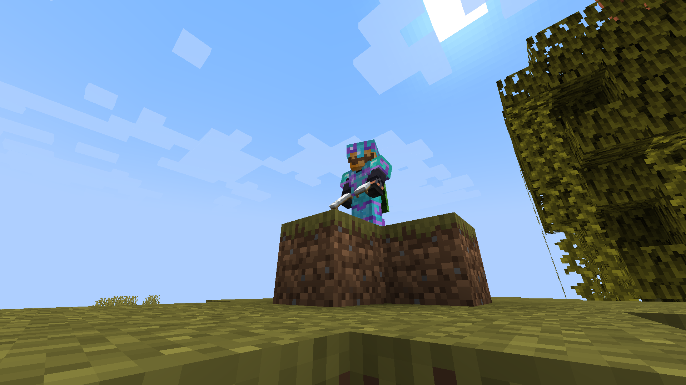
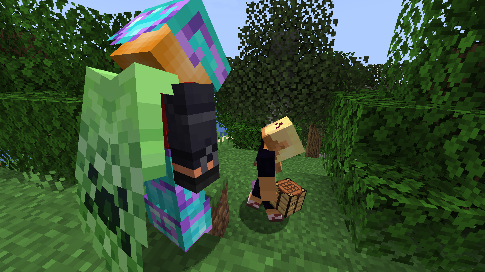

The Return of Joa04

De Komst Van Joachim en de Beddendief

The welbekende Joachim de Wild, die voorheen in alle Gekkies servers heeft gespeeld, heeft zich ook eindelijk Gekkies 4 betreden. De dag was 3 juli en hij had waarschijnlijk niks beters te doen, maar hij heeft gespeeld! Nadat hij was ingespawned werd hij begeleid daar de bewoonde wereld waar hij al snel een grot in een wand maakte!
Alles bleef niet vredig, want Joachim neemt blijkbaar oorlog of conflicten mee op elke server waar die speelt. Geloof je me niet? Laten we even recappen.
Gekkies 1: Geen Oorlog (misschien is het toch niet waar help)
Gekkies 2: Hij werd gekroond tot eerste democratische leider van Gekkies, dit zorgde voor een conflict tussen de rebel TruestLegend en Joa04 (en rechterhand en stadsbouwer)
Gekkies 3: De oorlog tussen vaticaan stad en de comunistische staat.
Oké, oké! We zijn weer helemaal bij! Nu bij het conflict van Gekkies 4: De beddendief

De dag was 3 Juli, alles was vredig. De heer Joellizzy gaf Joa04 een bed. Belangrijk om te weten is dat TruestLegend er een hekel aan heeft dat Joellizzy slaapt en probeert dat te voorkomen. TruestLegend sloop het huis van Joa04 binnen, waar hij spullen stond te smelten, en stal Joa04's bed. Er werd een nieuw bed geproduceerd door Joellizzy en die werd weer, op een klaarheldere dag gestolen waar Joa04 naast stond (nog steeds te smelten). Dit gebeurde nog een paar keer, totdat Joellizzy er genoeg van had. Hij zal dit oplossen! Hij pakte een shulker box en een crafter (Hé de nieuwe update is ook te spelen op de Gekkies 4 server, kom snel!) sluite het aan, pakte zijn hout en wol. Hij haalde de hendel over en er werden 2 shulkers vol aan bedden geproduceerd!
Ondertussen werden er meer bedden gestolen en werd er een mega toren van gemaakt! Joellizzy besloot dat ging dealen in bedden! Maar niemand wou bedden, dus na het vertrek van Joa04 werd zijn huis volgebouwd met bedden door TruestLegend (de Beddendief) en Joellizzy! Happy Ending!
Sorry Joachim, maar aldus, Reporter Joellizzy en de emotionele steun _atheron_ van de Gekkies Krant